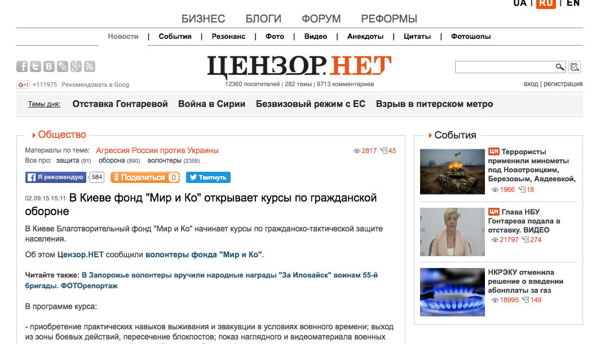
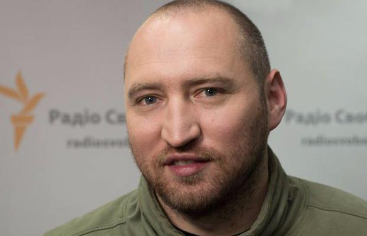

censor.net

В Киеве фонд "Мир и Ко" открывает курсы по гражданской обороне
В Киеве Благотворительный фонд "Мир и Ко" начинает курсы по гражданско-тактической защите населения.
"И ВОЛОНТЕРЫ, И БОЙЦЫ ЗНАЮТ, ЧТО ВОЙНА БУДЕТ ПРОДОЛЖАТЬСЯ", - ВОЛОНТЕРЫ МИРОСЛАВ ГАЙ И АЛЕКСАНДР ВЕНДЮК
Благотворительный фонд "Мир и Ко" действует не так давно, но очень близок солдатам. Дело в том, что его основатели Мирослав Гай и Александр Вендюк являются бывшими бойцами Национальной гвардии - Первого резервного батальона имени Кульчицкого.
FaceNews

Мирослав Гай: Я верю в чудо. Оно совершается на моих глазах каждый месяц
Наш фонд Фонд Мир и Ко. Организация помощи военным и беженцам не существует за счет больших грантов.
Телеканал новостей «24»
Волонтер Мирослав Гай: Мы спасли много жизней благодаря быстрой доставке гуманитарных грузов
После войны мечтаю взять своих двух сыновей и поехать где-то на Килиманджаро, в Африку
ФОКУС

Добро с кулаками. Как волонтёр Мирослав Гай помогает себе, спасая Украину
Мирослав Гай уже два года живёт на разрыв. Занимается волонтёрской деятельностью, лоббирует законы, участвует в создании социальных проектов, одним из первых публикует последние сводки с передовой, а его публикации и статьи о ситуации в Донбассе быстро расходятся по интернету.
Громадське радіо
«Влітку було спокійніше, зараз — війна» — Мирослав Гай
Мирослав впенений, що Путін буде йти до кінця, бо процес мілітаризації і фашизації російського суспільства розкрутився настільки. що його вже неможливо спинити
Факты и комментарии
Мирослав Гай: "Защищать бойцов нужно сейчас. Мертвому солдату бронежилет ни к чему"
Киевский актер, режиссер, герой публикаций «ФАКТОВ» Мирослав Гай организовал благотворительный фонд «Мир и Ко», который за короткое время успел одеть, накормить и защитить сотни бойцов, да еще и сделать неуязвимыми для вражеских гранатометов несколько БТРов
PETRIMAZEPA.COM
МИРОСЛАВ ГАЙ: О ВОЕННЫХ СОБЫТИЯХ ПРОШЛОЙ ЗИМЫ
После Майдана основная часть нашей третьей сотни пошла на войну в добровольческие батальоны. Первым был батальон имени Кульчицкого, в то время он назывался добровольческим батальоном Национальной гвардии. Я пошёл в гвардию, потому что, во-первых, не служил срочку и не мог отправиться воевать, а мне хотелось быть со своими товарищами по Майдану.
Диалог.UA
Я верю в чудо. Оно совершается на моих глазах каждый месяц - Мирослав Гай
12 месяцев. Я верю в чудо. Оно совершается на моих глазах каждый месяц. Хочу поделиться опытом. Наш фонд "Фонд Мир и Ко". Организация помощи военным и беженцам не существует за счет больших грантов.